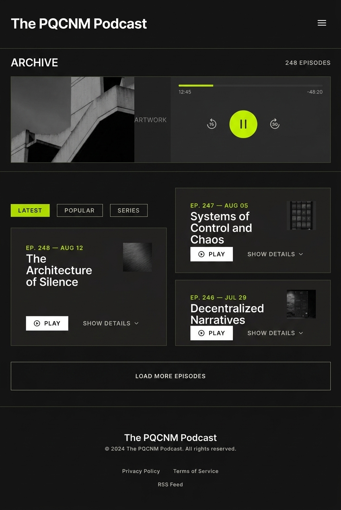
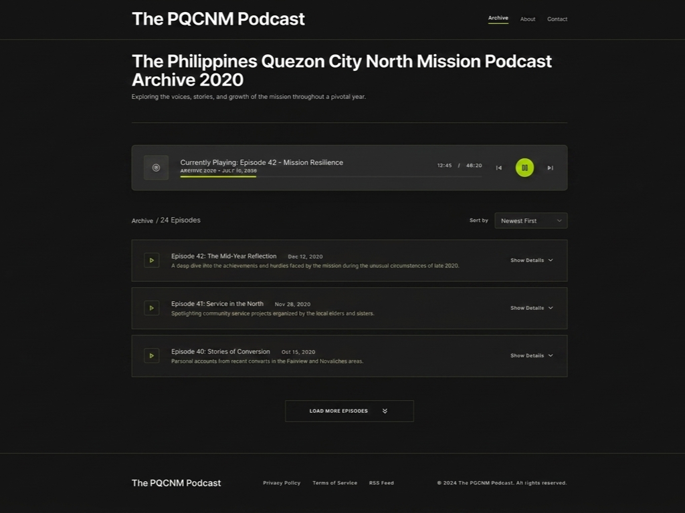

Site Purpose
The PQCNM Podcast Archive is a website that organizes a collection of over 60 audio messages into a searchable and accessible digital archive. Visitors will be able to browse podcast episodes, listen to audio recordings, read episode summaries and transcripts, and search for episodes by title, speaker, or topic. The website will also include an About page explaining the purpose of the archive and a Contact page with a feedback form.
Target Audience
Returned Missionaries of the Philippines Quezon City North Mission who served under the leadership of President and Sister Hughes.
Branding
Color Palette
Hex codes and roles for your chosen colors:
Typography
Heading Font: Inter
Body Font: Inter
Site Map
The structure of the website will follow this page breakdown:
- Archive (index.html) - This shows the archived episode list of the podcast.
- About (about.html) - This page explains a brief explanation of the purpose of the podcast.
- Contact / Form (contact.html) - A contact form for the developer of the page.
Wireframes
Below are the basic structural layouts planned for the mobile and desktop views.
Mobile View Layout

Desktop View Layout
